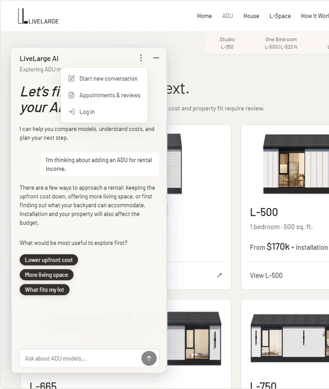
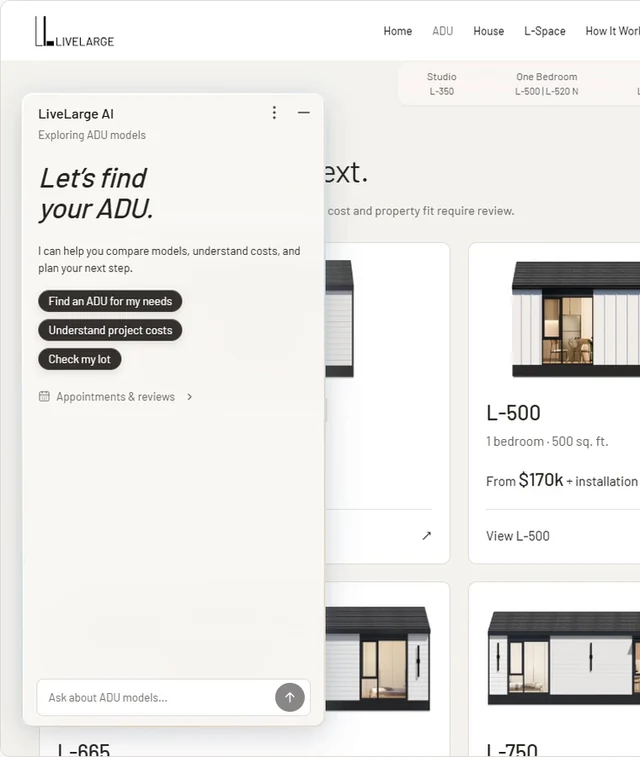
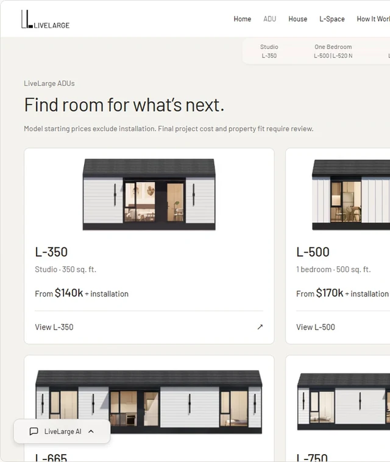
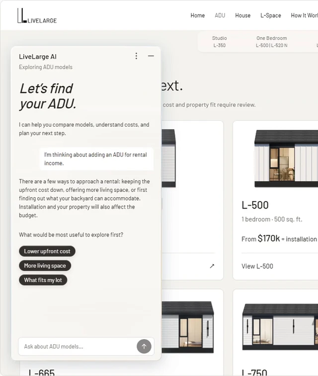

Helping homeowners compare ADUs before a lot review.
LiveLarge sells prefabricated ADUs—small, self-contained homes added to an existing residential lot—in California. Before asking LiveLarge to review their property, visitors need to compare models, understand what a starting price leaves out, and know which questions only a lot review can answer.
Working through VortexNet, I led the design of an assistant for LiveLarge’s website: its conversation flows, interface, motion and interactive prototype. It keeps a visitor’s stated needs as they browse, compares models against those needs, and hands property-specific questions to LiveLarge’s existing lot review.
- Client
- LiveLarge, through VortexNet
- Role
- Design Lead
- Scope
- Conversational UX, Visual Design & Prototyping
- Timeline
- May–Sep 2026
- Status
- Design approved · staging build in progress

Highlights
Compare homes. See what still needs a lot review.
The case follows two situations: adding a rental unit with upfront cost first, and a one-bedroom home for an aging parent.
01 Reframe
The information was there. Connecting it was left to the visitor.
LiveLarge’s site already answered the big questions—which home, what it costs, what the lot allows—but on separate pages. A visitor had to carry their own needs from page to page, and find what a starting price excludes in an FAQ.
The site I started with
LiveLarge’s pages before the assistant, from browsing a home to checking a property.

The homes lead.
The homepage gives the homes a strong presence, with contact options at the edge. An assistant shouldn’t compete with that.

The specs are all there.
Every model’s specifications are listed. Which differences matter depends on the household, and the page can’t know that.

The model changes. The needs don’t.
Switching models resets the page, but a visitor’s bedroom count and budget stay the same.

The price and its caveats live apart.
Model pages show a starting price. What it excludes—installation and site work—sits in the FAQ.

The next step already exists.
Check My Lot—LiveLarge’s lot review—already collects what the team needs. The assistant should lead here, not replace it.
Two situations I designed for
Drawn from desk research, not interviews.
Adding a rental unit
A homeowner wants rental income from an unused backyard, but can’t tell what a starting price leaves out, or which answers only a property review can give.
A home for an aging parent
A family wants a place where a parent can stay independent, and needs to see whether daily routines would work in the space.
What two shipping assistants taught me
Before designing, I tested two assistants that already live inside a product: Homes.com’s AI search and Amazon’s Alexa for Shopping. Both kept context well. Where they fell short, I set a rule for LiveLarge.


- 1Keep what visitors said
Homes.com kept location, pets and commute when the rent limit changed.
- 2Ask only what’s missing
Alexa asked about use and budget instead of asking for a full prompt.
- 3Say what “cheaper” means
Homes.com narrowed results for “cheaper and closer” without saying how. LiveLarge shows the price difference in numbers.
- 4Keep the price and its limits together
Homes.com mixed base rent and fees. LiveLarge puts “excludes installation” next to every price.
- 5Don’t stretch the stated need
Homes.com read “one-bedroom” as “1+ Bed”. LiveLarge labels anything outside the need as an alternative.
- 6Open the next step, send nothing
Homes.com opened the agent form without submitting it. LiveLarge opens the lot review beside the chat.
Reduce what users need to say, without hiding what the system remembers.
From separate pages to one connected conversation.
Before The visitor keeps their needs in their head.
- BrowseHome / ModelsIn their head
- ExploreModel detailsIn their head
- CompareSpecifications / FAQIn their head
- Next stepLot review / ConsultationExplained again
With the assistant The same needs stay in view as visitors explore.
- BrowseAnswer in context
- ExploreKeep needs
- CompareCompare trade-offs
- Next stepGuide property review
So the assistant’s job became: carry a visitor’s needs across the site, make trade-offs visible, and hand property questions to LiveLarge’s team.
02 Keeping context
Keep what the visitor said while the page changes.
Demo 1 · Rental, mid-conversation. Already known: two bedrooms, and budget matters. What changes: the model on screen.
“What about this one?” only works if the assistant knows which home is on screen. I kept two things separate: the page reference, which follows the visitor, and their needs, which stay in the conversation.
- 2.2
Show which home an answer is about.
The current model sits under the chat title, so visitors can check the reference before reading the reply.
- 2.3
Change the reference, keep the needs.
When the page scrolls to L-795, the label updates. Earlier replies stay as they were, and so do the two-bedroom and budget needs.
What about this one?
You’re now looking at L-795. It has 5 sq. ft. less area and a listed starting price $20k lower than L-800, before installation.
It keeps your two-bedroom preference while giving you another price point to consider. The layout and listed space requirement also differ. Compare how you would use the rooms. Property fit and the full project budget still need review.
2.4Let “this one” mean the page.
The reply names L-795 and compares it with L-800, connecting the model on screen to the bedroom and cost needs from earlier.
What would happen next?
You can keep two-bedroom options open! LiveLarge’s process starts with an introductory call or virtual assessment, followed by a site visit.
Since budget matters to you, ask for a property-specific estimate before choosing a model. A lot review lets you provide the property details the team needs. If you’d rather experience the homes first, you can book a tour.
Request a lot reviewBook a tour2.5Carry the needs into the next page.
On How It Works, the reply still accounts for two bedrooms and budget when it offers a lot review or a tour.
03 Clarify & recommend
Ask only what changes the answer.
Demo 2 · Rental, new conversation. The previous demo showed how needs are kept. This one shows how they’re gathered.
A rental goal leaves several things open: upfront cost, living space and what fits on the lot. The assistant asks only for what is still missing—first a priority, then the bedroom count—before it compares models.
What the assistant knows
- Goal
- Not yet
- Priority
- Not yet
- Bedrooms
- Not yet
- Still open
- Installation, property fit
Shortlist 4 models
- L-5001 bed$170k
- L-520 N1 bed$180k
- L-7952 bed$245k
- L-8002 bed$265k
L-795 starts $20k lower
- 3.2
Ask what to prioritize first.
“Rental income” can mean keeping the upfront cost down or making room for more tenants. I offered both as a small choice instead of recommending from the goal alone.
Knows Rental income Asking Priority
- 3.3
Ask the question that changes the shortlist.
After “Lower upfront cost,” bedroom count still decides which models belong in the comparison, so I asked for it here. A need the visitor has already given is never asked again.
Knows Rental income, lower upfront cost Asking Bedrooms
- 3.4
Lead with a concrete trade-off.
L-795 starts $20k below L-800 while keeping two bedrooms. I put that difference before the cards, then lined up floor plans and space requirements so price has context.
Knows Rental income, lower upfront cost, two bedrooms Shortlist L-795, L-800
- 3.5
Put the limit next to the next step.
Starting prices exclude installation, and only a lot review can confirm fit. I put that line beside Request a lot review, so the next step answers the open question.
Still open Installation cost, property fit

From a verdict to a candidate.
Early replies said a model “matches” because it had the right bedroom count. That one fact can’t confirm fit or the full budget, so I rewrote replies to say what’s supported and what’s still open.
Iteration 1
Final prototype
- 1From verdict to candidate
Bedroom count is one requirement. It can’t confirm the home is right.
- 2Edit needs by replying
A separate Edit needs button added friction. Visitors already correct themselves in the chat. The needs summary stays.
- 3Name what’s still unknown
Say plainly what still needs checking: property fit and the full budget.
- 4A direct next step
The earlier card had no way to the model page. View L-800 completes the path from recommendation to details.
04 Compare → lot review
From comparison to a lot review.
A lower starting price can make a home worth a closer look, but it can’t say whether it works on the visitor’s lot. So the assistant keeps the comparison open, opens LiveLarge’s existing lot review beside it, and says plainly that the chat isn’t sent with the form.


05 Visual design
An AI presence
that feels at home.
LiveLarge wanted the assistant to feel like AI on a site led by its homes. Color and light can show that the assistant is there and working, but they can’t make its answers better. So I used them in two moments only: the first greeting and the wait for a reply. Everywhere else, the assistant uses the site’s Barlow type and neutral surfaces.

1 Suggestions match the page

2 Header and input stay fixed

3 The panel widens for a comparison
Before

After


Give each visual element a job.
Color introduces the assistant. A short light on the panel edge shows a reply is coming. Answers sit on a plain surface.
Familiar by default
Barlow, simple controls and neutral surfaces tie the assistant to the site.
Color at the greeting
Blue and warm light appear at the first greeting only, never behind answers.
Motion at the edge
A short light runs along the panel edge while a reply is on its way.
Keep motion at the edge.
The edge light runs while a reply is prepared, then fades as the answer appears.
A · One compare button

B · Follow-up questions Chosen

5.3 · One card, read top to bottom
L-500 · One bedroom
The home comes first, then specs, then the starting price with its installation note and the property caveat together.


5.4 · Two cards, read side by side
L-500 vs L-520 N
Each field sits at the same height in both cards, so visitors compare plan to plan and price to price.


06 Prototyping
Turning design rules into
checks for a working build.
I wrote the interaction design as briefs for coding agents, then checked the working prototype against them with screenshots and recorded walkthroughs on desktop and mobile.
One check, start to finish. The rule: the panel keeps its size as visitors move between pages. What the build did: going from Home to ADU models, the empty panel shrank from 744 px to 374 px. How I caught it: walking the flow, then checking the height calculation. What changed: the open panel now keeps its height across page changes.
6.1 · Start fresh, stay on the page.
1 A conversation in progress

2 Chat options → Start new conversation

3 Messages clear; the page stays in context
The first greeting introduces the assistant, so a new chat skips it and goes straight to the task: “Let’s find your ADU.”
6.2 · Hide the window, keep the work.
1 Chat open

2 Minimized while browsing

3 Reopened with every message
07 Outcome
Where it stands.
VortexNet is building the staging version.
I delivered the conversation flows, the assistant’s UI and motion, recommendation and comparison components, and an interactive prototype with behavior checks. What I’d measure after launch: lot reviews requested from the chat, how often conversations reach a comparison, and where visitors leave before a lot review.
Beyond this project
What changes when
the goal is rebuilding?
After the January 2025 Eaton Fire, LiveLarge also builds replacement homes in Altadena. I sketched how the same approach—keep the needs, name the open questions, hand off to a lot review—could help a homeowner who has to replace their main home first.
“I need to replace my main home. I might add a rental later. Where should I start?”
A path to discuss, with the open questions intact.
Keep the possibility of an ADU in view for a later conversation.
The company describes light steel framing and fire-resistant materials for its rebuilding offering.
Lot conditions, applicable requirements, project scope and a property-specific estimate.